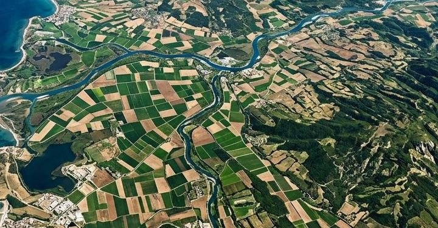

GaiaScope™
An evidence-gated Earth Observation platform built for Mediterranean agriculture and environmental monitoring. Features multi-temporal persistence filtering, canopy decoupling, and an audit-ready satellite-to-field feedback loop.